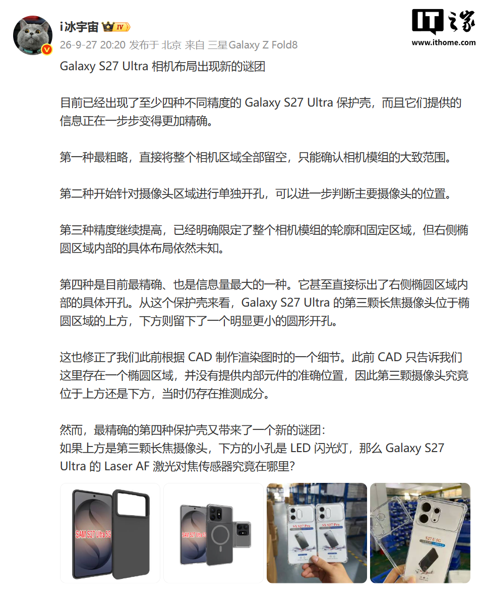
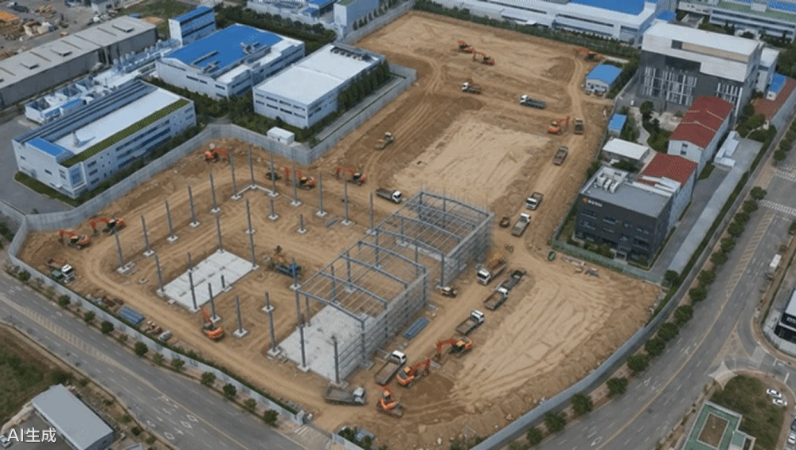
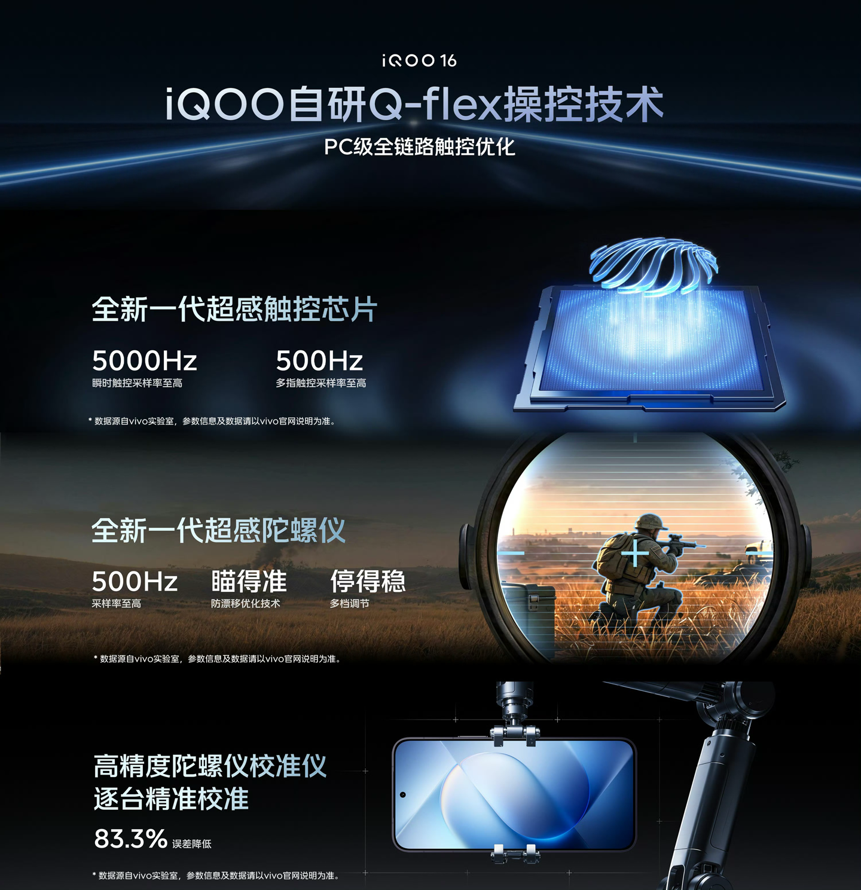
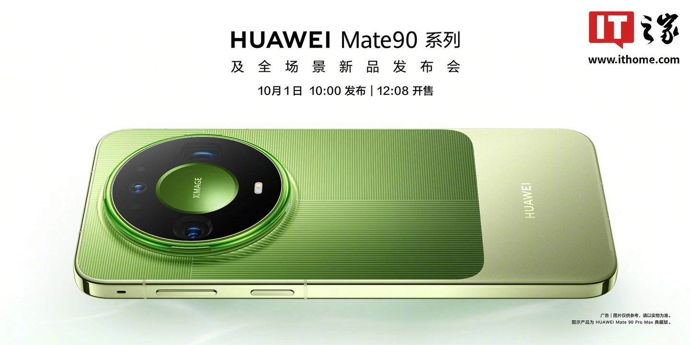
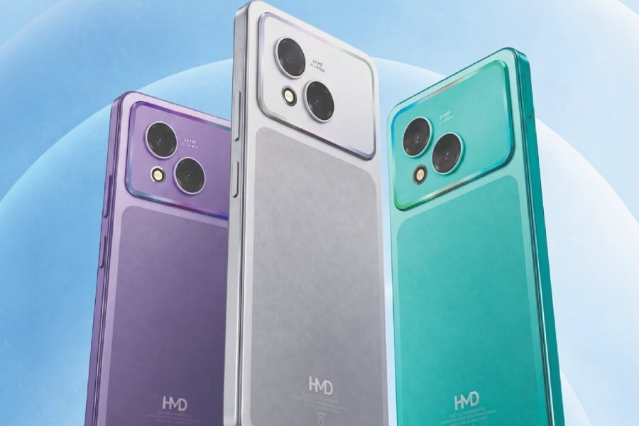

THE TECH EDIT
기술의 변화, 매일 한눈에.
카메라 · 스마트폰 · AI, 해외 테크 소식을 모아 전합니다.
최근 발행2026-09-30
새로 들어온 소식
LATEST STORIES

최신 뉴스
전체 3,378개 기사
Samsung Galaxy S27 Ultra 스마트폰 마이크, 카메라 모듈에 숨겨질 예정

Samsung Galaxy S27 Ultra 스마트폰 카메라 유출: 더 따뜻한 색감, 더 강력한 하이라이트 억제, 더 깨끗한 암부
Samsung 파운드리: 2029년 고객사 수 2017년 대비 5배 증가, HPC 매출 절반 이상 기여 예상

Samsung 전기, AI 서버용 FCBGA 반도체 기판 생산 능력 확대를 위해 6조 7,800억 원 투자 발표

옴니비전, 800만 화소 차량용 외장 카메라 이미지 센서 OX08D30 발표: LED 플리커 억제 지원

모토로라 최초의 와이드 폴더블 스마트폰 렌더링 유출: 내부 6.92인치/외부 4.97인치 스크린, 12월 출시 예정

IT 모닝 브리핑 0929: '퀵 앱' 남용, CCTV 휴대폰 팝업 광고 문제점 폭로; HarmonyOS 스마트카 AITO Luxeed RX 25만 9,800위안부터 출시; Honor Magic9 시리즈 스마트폰 4,499위안부터 출시; Zhipu ZCode 관련 클라우드 데이터 삭제 완료...

iQOO 16, 2K 165Hz 10,000니트 AMOLED 디스플레이, 8,400mAh 배터리, Snapdragon 8 Elite Gen 6 Extreme, 트리플 50MP 카메라 탑재하고 출시

iQOO 16, 스마트폰 업계 최초 Q-flex 제어 기술 공개: 최대 5000Hz 순간 터치 샘플링 속도, 최대 500Hz 자이로스코프 샘플링 속도

iQOO 15 스마트폰 판매량 200만 대 돌파

아이폰 18 Pro Max vs 아너 Magic 9 Pro Max: 전문가들의 차이점

Huawei 루이잉 Z10 모듈 카메라 공개, Mate 90 Pro Max 컬렉션 에디션/RS 얼티밋 에디션 등 특정 모델 사용 가능

Huawei, 스마트폰 카메라 렌즈 위치에 장착 가능한 독립형 렌즈 '거포' 특허 공개

Huawei Mate 90 시리즈 플래그십 스마트폰 공개, 10월 1일 공식 출시 및 판매 시작
Huawei Mate 90 시리즈 실물 오프라인 매장 첫 현장 체험, '거포' 카메라 모듈 시선 집중

HMD, 6,400만 화소 Sony 카메라와 Indus AI 탑재한 새 스마트폰 출시

1299위안: Fujifilm Instax Pal 2 포켓 카메라 출시, 1/3.06인치 10MP 센서
크리에이티브 일렉트로닉스, TSMC N2P 공정 HBM4E IP 출시, 16Gbps 속도 지원
'컨트롤: 공명' 게임, 다음 달 '새 게임 ++' 및 사진 모드 추가 예정

Apple 최초의 폴더블 iPhone Duo 대기 모드 미리 보기: 스누피 등 5가지 인터페이스, 새로운 워치 페이스 편집기 탑재

Samsung 계열 6개 기업, AI 인프라 기업 Helix에 총 10억 달러 투자
검색 결과가 없습니다
다른 검색어를 입력하거나 필터를 초기화해 보세요.